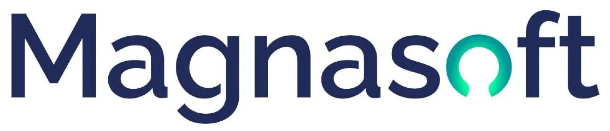
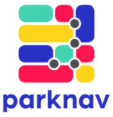
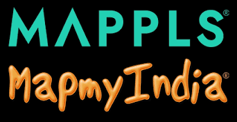
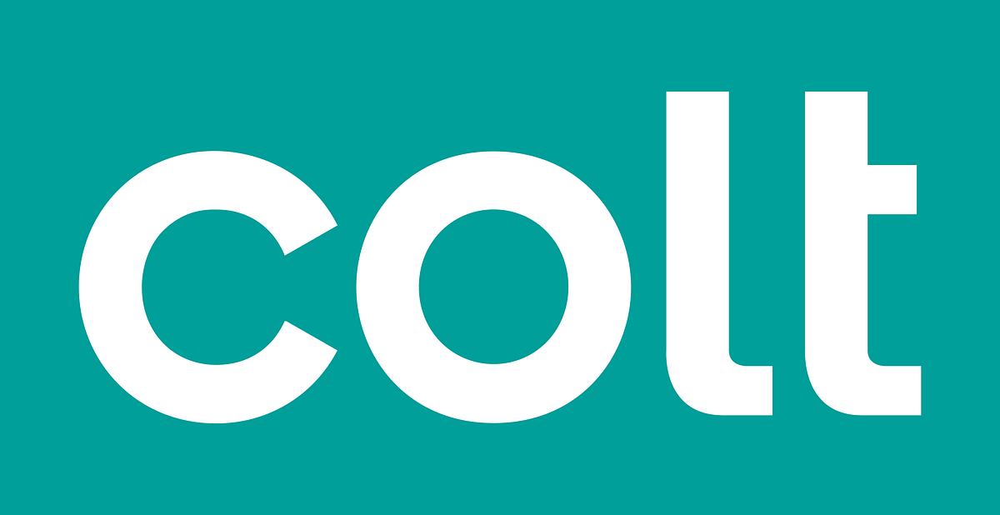
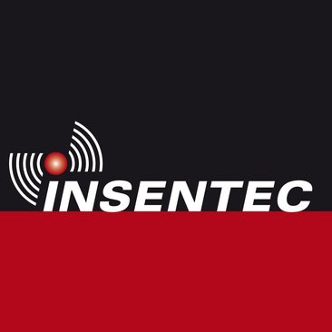

Venture Management
Deltilo trabaja en la frontera entre el negocio y la tecnología. Estamos convencidos de que la excelencia en la planificación empresarial, la gestión y la financiación es clave para implantar la tecnología con éxito comercial. Estaremos encantados de ayudarle con cualquiera de estos tres componentes.
La cartera de servicios de Deltilo incluye planificación empresarial y tecnológica, estudios de mercado, valoración, análisis financiero, due diligence y gestión de productos y programas.
Deltilo aporta, recluta o refuerza la dirección para lograr una sinergia exitosa entre negocio y tecnología, ya sea de forma interina o a largo plazo.
Deltilo puede estructurar la financiación necesaria para seguir desarrollando el negocio o la tecnología, por ejemplo mediante subvenciones públicas, préstamos, capital riesgo o crowdfunding.
Una selección de empresas a las que Deltilo ha prestado servicios de asesoría, dirección interina y capital.

Vicepresidente para Europa (interino)
Responsable de todo el negocio europeo, existente y nuevo. Apertura de una oficina europea en La Haya (Países Bajos).
Magnasoft es un especialista global en sistemas de información geográfica (SIG), cartografía 3D, gemelos digitales, analítica de datos espaciales e ingeniería CAD. La empresa ayuda a organizaciones de los sectores de telecomunicaciones, servicios públicos y administración pública a cartografiar y gestionar digitalmente sus activos físicos.

Vicepresidente sénior de Desarrollo Corporativo (interino)
Apoyo en la captación de nuevas rondas de financiación.
Ai Incube es una plataforma avanzada basada en IA para la navegación inteligente hacia aparcamientos y para datos a pie de calle. Mediante aprendizaje automático y algoritmos predictivos, la empresa ofrece información en tiempo real sobre la disponibilidad de aparcamiento en la calle y en garajes en más de 1.000 ciudades.
Director general para Europa (interino)
Responsable de todo el negocio europeo, existente y nuevo.
RMSI es un líder mundial en inteligencia geoespacial, Geo-IA, gemelos digitales y desarrollo de software geoespacial. Presta servicio a grandes empresas tecnológicas, gobiernos, operadores de telecomunicaciones y compañías de servicios públicos de todo el mundo.

Asesor del consejo de administración
Asesoramiento sobre la estrategia de entrada en el mercado europeo.
CE Info Systems es un líder tecnológico indio que cotiza en bolsa (NSE: MAPMYINDIA) y el principal proveedor de mapas digitales, plataformas de navegación B2B/B2C (Mappls) y tecnologías IoT basadas en la ubicación en la India.
Cofundador, accionista y director
Atlantic Telecom fue un operador de telecomunicaciones británico cotizado en bolsa que, en torno al cambio de siglo, desplegó amplias redes de fibra y DSL por toda Europa. Inovara B.V. era su filial operativa en los Países Bajos y prestaba servicios de banda ancha y datos al mercado empresarial mediante acceso desagregado al bucle local (MDF-access).

Asesor del consejo de administración
Dirección de la adquisición de la red de fibra de Telecom Noord West N.V. por parte de COLT Telecom.
Colt es un importante proveedor internacional de telecomunicaciones e infraestructura digital que presta servicio a clientes empresariales de todo el mundo. Colt adquirió la red local de fibra óptica de la empresa energética de Ámsterdam Energie Noord-West (Telecom Noord-West) para construir una de las primeras redes privadas de fibra de alta capacidad de la ciudad.

Asesor del consejo de administración
Organización de una importante financiación de crecimiento (scale-up) para Insentec.
Insentec (parte del Hokofarm Group) es una empresa neerlandesa pionera en el diseño y la fabricación de soluciones automatizadas para la ganadería. Es reconocida mundialmente por sus sistemas de alimentación inteligentes, robots de ordeño, sensores y sistemas de identificación animal para ganado lechero y vacuno.
Deltilo fue fundada y está dirigida por Hugo van der Linde, emprendedor y directivo con amplia experiencia en el sector tecnológico. Ya en 1998 Hugo creó RMG Venture Management, desde donde fundó, financió y dirigió varias empresas tecnológicas. Por ejemplo, Hugo cofundó, financió y dirigió la tercera mayor empresa de banda ancha DSL para empresas de los Países Bajos.
Asimismo, Hugo fue CEO de la plataforma en la que más del 95 % de las agencias de viajes de los Países Bajos realizan todas sus reservas. Tras migrarla a un servicio en la nube y aumentar sus beneficios, la empresa fue vendida a TUI, uno de los mayores grupos turísticos del mundo.
Posteriormente, Hugo fue nombrado CEO de AND, una empresa cotizada en la bolsa Euronext. Transformó la compañía en un proveedor tecnológico de vanguardia que suministraba tecnologías de localización a empresas tecnológicas de la lista Fortune 500 en todo el mundo. Durante sus ocho años al frente, la cotización de AND subió más de un 150 % y, en dos años distintos, AND obtuvo el premio Euronext Best Performer.
Además de su trayectoria empresarial, Hugo está firmemente comprometido con la creación de oportunidades para personas alejadas del mercado laboral. Apoya activamente iniciativas que ayudan a dar el paso hacia un empleo remunerado y estable, convencido de que el éxito empresarial y el impacto social van de la mano.
Hugo tiene un máster en Ciencias (MSc) por la Universidad Técnica de Delft y un máster en Administración de Empresas (MBA) por la RSM Erasmus University de Róterdam.
Deltilo cuenta con el apoyo flexible de una amplia red de expertos jurídicos, financieros, de gestión y tecnológicos, pero colabora con el mismo gusto con los profesionales con los que usted ya trabaja.